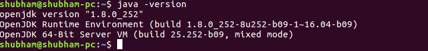

Code Buddy
Code Buddy is a simple desktop application designed for conducting coding assessments!
Features of Code Buddy
- No registration required
- Support for multiple programming languages i.e. C, C++, Java and Python
- Automatic testing against pre-defined test cases
- Rich-code editor with syntax highlighting for multiple programming languages
- and many more...
Dependency
You need to first install JDK(Java Development Kit) or JRE(Java Runtime Environment) version 8 in order to run this applicationYou can download the JDK8 from here according to your operating system
You can verify your installation with following command
java -version
The following image shows the output for Ubutnu-16.04

Download and Installation
Download CodeBuddy-v2.1.1 JARDownload CodeBuddy-v2.1 JAR
Download CodeBuddy-v2.0 JAR
Download CodeBuddy-v1.1 JAR
Download CodeBuddy-v1.0 JAR
Once you have installed JDK8 and configured the path variables then you can run the application using the command:
java -jar CodeBuddy.jar
The following snapshot shows how to run this application via command-line

Release notes for CodeBuddy-v2.1.1
Wohoo! Compatible with assessments created with v2.xFollowing are the features added in this release
- Fixed bug in parsing scoreList.txt
- Allowed blank outputs
Release notes for CodeBuddy-v2.1
Wohoo! Compatible with assessments created with v2.0, so users of v2.0 can safely switch to v2.1 for more interesting featuresFollowing are the features added in this release
- Added support for import test-cases for instructors
- Added support for import/export code for students
- Added support for custom-testing for students
- Added some-interesting themes for code-editor
- Fixed refresh question button working
- Disabled auto-scroll for writing code
- Fixed command-line-arguments parsing bug from last release
- Fixed bug mentioned in the last release (now works with path containing whitespaces)
- Improved code execution process
Release notes for CodeBuddy-v2.0
NOT compatible with assessments created with v1.1Following are the features added in this release
- Added support for more than one problem in single assessment
- Added rich text-editor for instructors
- Added rich code-editor with syntax highlighting
- Allowed editing for previously created assessments
- Added support for maintaining list of submissions and rollbacks
- Added support for image attachments (Upload images to Google Photos and paste link)
- Enhanced GUI
- Improved code execution process
- Improved error-handling mechanism
- Disabled copy-paste
- Requires internet connection for rich code-editor
- Fails to execute user's code if path to application contains white-spaces
Release notes for CodeBuddy-v1.1
NOT compatible with assessments created with v1.0- Added support for command line arguments per test case
- Added support for time limit on program
- Fixed other minor bugs
How to use?
Feedback/Suggestion
We would love to listen to your feedback. You can reach to us via:- Email: shubhampanchal9773@gmail.com, panchalprogrammingacademy@gmail.com
- Mobile: +91 9773669462
- WhatsApp: +91 9773669462
Copyright © 2020 - Code Buddy | Panchal Programming Academy
MIT LICENSE